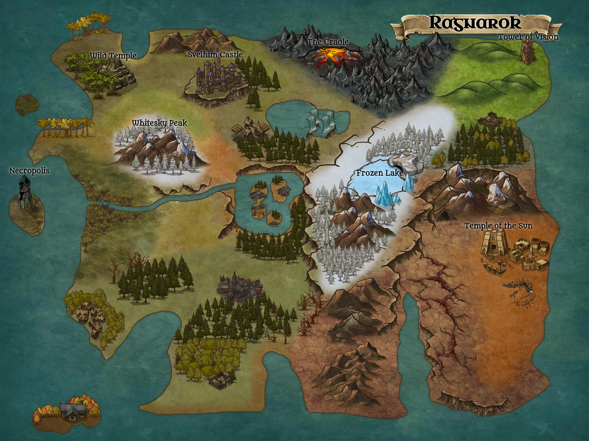
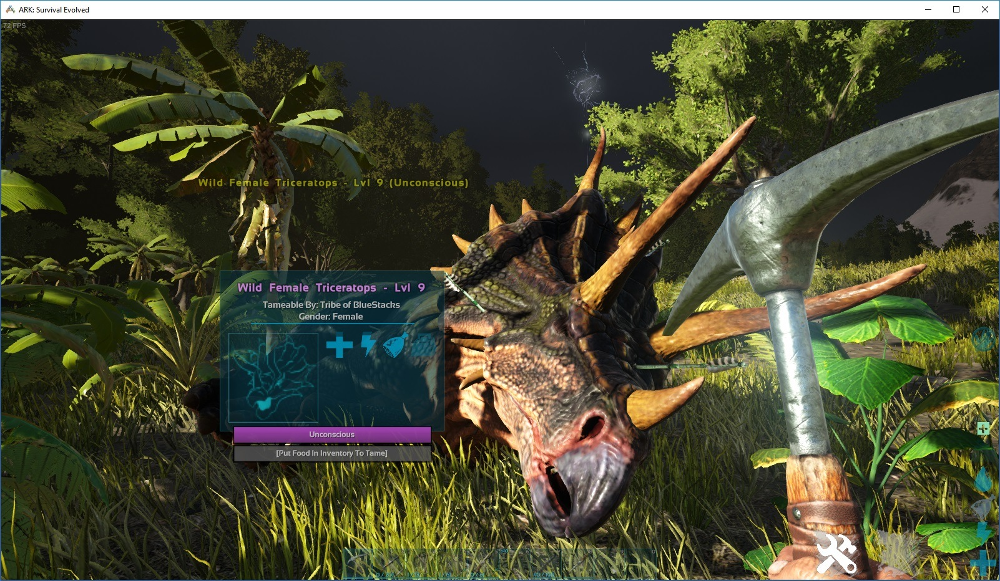
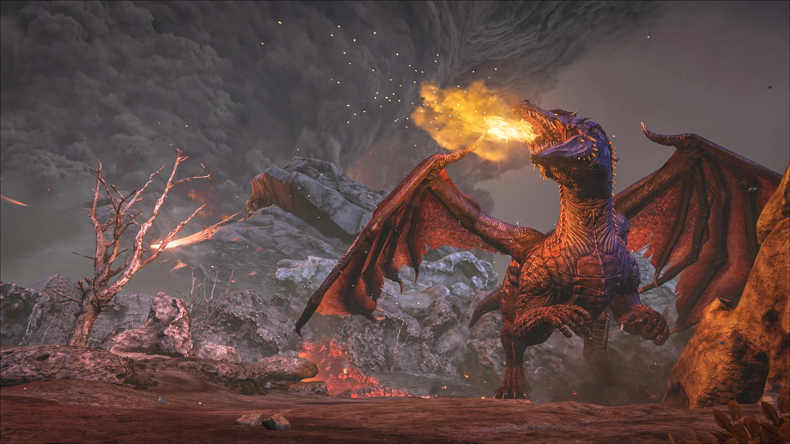

Ark: Survival Evolved drops you onto an island with nothing but your bare hands and the will to survive. The twist? That island is packed with dinosaurs. From the moment you open your eyes on the beach, the prehistoric world around you is both breathtaking and immediately threatening. A parasaur grazes nearby. A raptor sprints across the treeline. Somewhere in the distance, a T-Rex roars.
The setting stands out in the survival genre. Living alongside creatures long extinct adds a real sense of danger and scale. The world tells its own story through ancient ruins, mysterious obelisks, and scattered technology, hinting at a deeper history beneath the surface.
What you can do in Ark is staggering:
The sandbox freedom in Ark is impressive. Players can explore, build, and survive however they choose. The game rarely guides you step by step, and that sense of open-ended possibility is a big part of what makes it so engaging.



Solo Ark is fun, but multiplayer PVP is where the game really shines and gets ruthless. On a PVP server, everything you build, every dinosaur you tame, and every resource you gather is at risk. Raids are real, losses are permanent, and the stakes feel higher than in most games.
Tribes add a social layer that changes everything. Forming alliances, negotiating with neighbors, or teaming up to take down the strongest tribe are all part of the strategy. Ark's multiplayer feels like a living political game, where trust is rare and betrayal is never far away!
The PVP combat is chaotic and unpredictable in the best way. A ground assault can include players on armored dinosaurs, turret fire from walls, and explosives breaking through defenses. Air raids, underwater ambushes, and surprise night attacks are all possible, and players learn to use and defend against them over time.